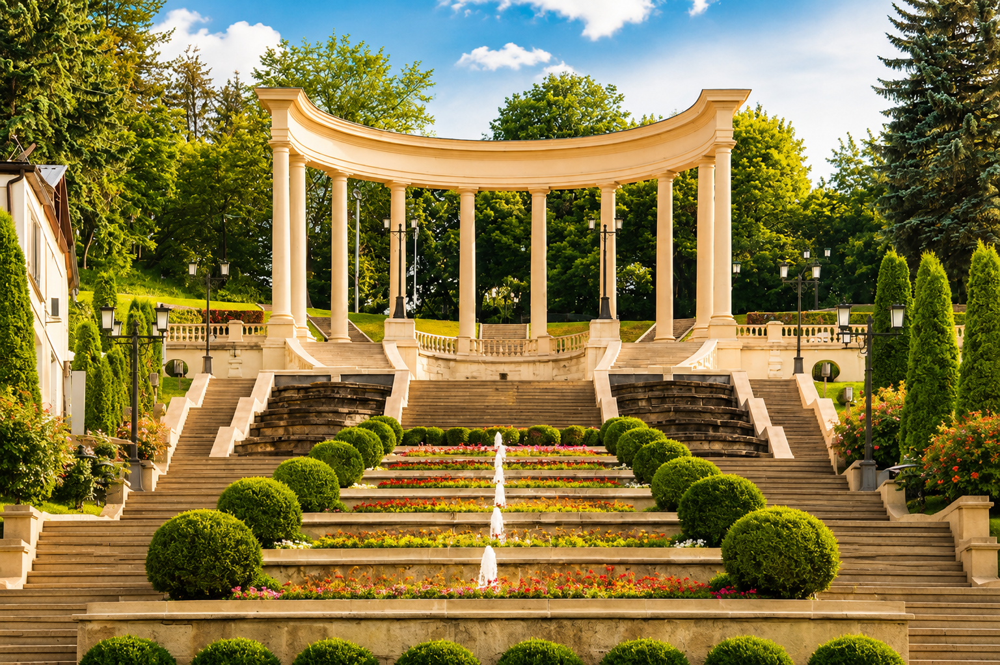
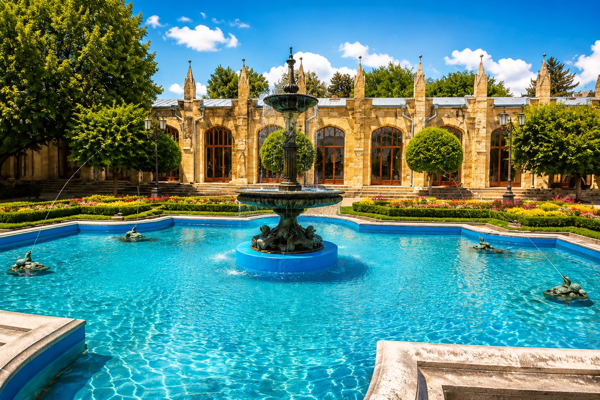

KAVKAZ TRAVEL
Там, где каждое путешествие становится историей.
Популярные направления
Смотреть все города →
Города Северного Кавказа


Мини-гид по КМВ
СОВЕТУЕМ ПОСЕТИТЬ

Воздушное приключение
ПОЛЕТ НА ПАРАПЛАНЕ
Открой для себя Кавказ с высоты птичьего полёта.


Кисловодск

ЦентрКурортный бульвар
Главная прогулочная ось с кафе, цветниками и видом на парк.

МаршрутНациональный парк
Терренкуры, воздух и длинные прогулки среди зелени.

СимволНарзанная галерея
Историческое место, где начинается курортный ритм города.

СезонДолина роз
Один из самых фотогеничных маршрутов Кисловодского парка.
Ессентуки

АрхитектураГрязелечебница Семашко
Монументальное здание и узнаваемый символ города.

МинводыИсточник №17
Классика лечебного курорта и часть прогулочного маршрута.

ПаркЦандеровский институт
механотерапии
механотерапии
Зеленая зона с павильонами, источниками и тенистыми аллеями.

АтмосфераМузыкальная беседка
Легкая остановка для прогулки и красивых кадров.
Воздушное приключение
ПОЛЕТ НА ПАРАПЛАНЕ
Открой для себя Кавказ с высоты птичьего полёта.